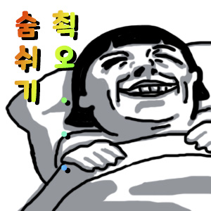

설레기만 했던 여행 극초반
지긋지긋했던 과제 지옥에서 벗어나고 종강한지 1주일만에 친구와 유럽여행을 가게 되었다. 열심히 준비했던 세종시 지원사업으로 가게되서인지 더 뿌듯해하면서 갔다. 19시간 장거리 비행에도 처음 밟아보는 낯선 파리에 흥분한 우리는 곧 있으면 떠날 사람처럼 허둥지둥 관광지를 쏘다녔다. 평소에 다녔던 단기 여행과는 달리 장기 여행은 체력 배분을 잘 했어야 한다는 사실을 그땐 알지 못했다.
다사다난했던 여행
아직은 그래도
처음 유럽여행을 계획했을때 프랑스, 스페인, 이탈리아, 스위스 총 4나라를 가기로 했는데 이는 파리에 있는지 5일만에 전면 수정에 들어갔다. 하루에 박물관을 두군데를 간다거나 대중교통을 이용하지 않고 도보로만 걷는다거나 하는 무리한 일정을 계속했더니 여행이 너무 지치는 것이 원인이였다. 결국 숙소를 잡지 않은 이탈리아와 프랑스에 있는 시간을 늘리고 스위스는 다음을 기약하게 되었다.
예상과는 달랐던
유럽여행하면 커피 한잔하면서 멋있고 여유롭게 걷는 모습을 상상하겠지만 실제로는 짐이 언제 털릴지, 기차나 비행기시간을 놓치지 않을지 전전긍긍하면서 신경을 곤두세운다. 특히나 유럽은 날씨가 너무 구려서인지 여행한지 얼마만에 친구와 서로 예민해졌다. 그나마 좋았던 스페인마저도 이탈리아 호텔을 미리 예약해버려 오래있지못하고 아쉬움을 남겼다. 이탈리아는 매 순간 인종차별을 당할 수 있었고 한국입국 비행기를 타기 위해 다시 돌아간 파리에서는 돈을 갈취하려고 했던 남자를 만나는 일도 있었다. 늘 꽃길 걷는 여행을 기대한 것은 아니였지만 내가 이 여행을 통해서 행복함을 느끼는 지 행복해보이려고 하는 지 가늠이 잘 안갈 정도로 스트레스가 많았던 여행이다.
돌아보면
앞서 계속 징징댔지만 세종시에 지원서를 냈을때로 돌아가라고 하면 돌아갈 것이고 열심히 준비해 다시 여행을 갔을 것이다. 그만큼 이 여행은 힘듦을 견딜만한 가치가 있었다. 다양한 미술사와 역사에 대해 알게 되었고 같은 예술종사자지만 예술을 대하는 태도 자체가 달랐던 거장들의 작품을 만나는 경험도 했다. 친구에게 더 솔직하게 의견을 건내거나 낯선 사람들에게 서슴없이 말을 걸 용기도 더 갖게된것 같다. 그리고 무엇보다 다양한 경험을 갖게되어 나를 설명할 특별한 에피소드가 늘어난 것도 하나의 자산이라고 생각한다.

여행을 다녀온 후
여행을 다니면서 체력도 많이 늘고 집에 돌아와서 하고싶던 것도 많아 열심히 살 줄 알았건만..
많이 싸돌아다닌 만큼 침대에서 뒹굴거리는 시간이 너무 소중하고 좋았다.
한마디로 말하면 뭣도 안한것. 방학이 다 끝난 지금은 조금 후회하지만 더 열심히 살 새학기를 위한 발판이라 생각하고 나아가려 한다.
학점도 잘 챙기고 디자인 실력도 늘리고! 숨쉬기 운동하면서 건강을 챙겨야겠다(!?)